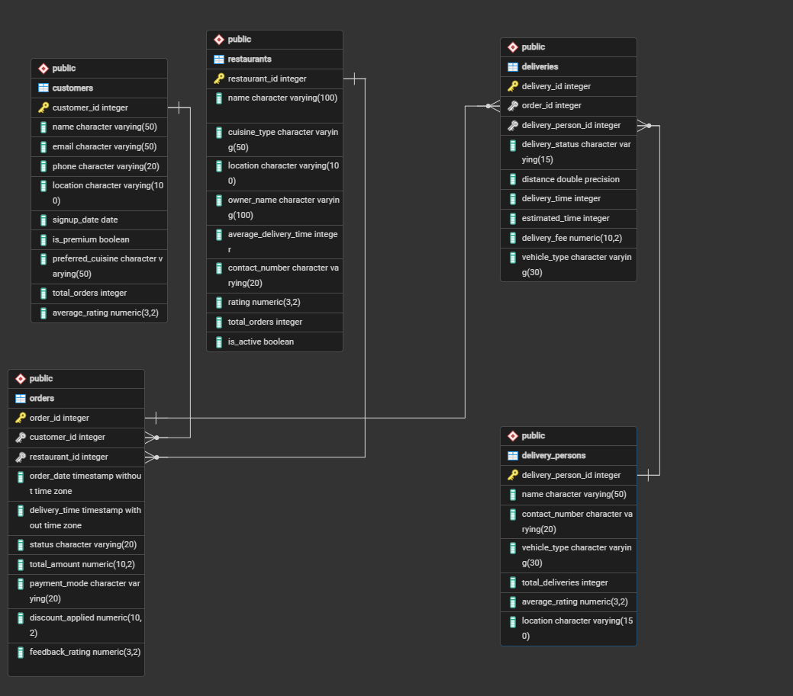

Zomato Food Delivery
SQL Project
Project Overview
This SQL project focuses on analyzing a food delivery platform (Zomato-style) using PostgreSQL. The project covers database design, joins, aggregations, window functions, CTEs, time-based analysis, customer segmentation, and rider performance analytics across 20 business questions.

Project Objective
The objective of this project is to build a relational database for an online food delivery business and use SQL to answer real business questions about customers, restaurants, orders, and delivery riders — including revenue ranking, growth trends, cancellation rates, and rider efficiency.
Database Structure
The database consists of five main tables that represent the different components of the food delivery platform.
| Table | Main Purpose |
|---|---|
| customers | Stores customer profiles, location, and preferences. |
| restaurants | Stores restaurant details, cuisine type, and rating. |
| orders | Tracks each order, amount, status, and payment mode. |
| delivery_persons | Stores rider details, vehicle type, and ratings. |
| deliveries | Tracks delivery status, distance, time, and fees. |
Schema Creation
Tables & Relationships
Creating the tables with primary keys and foreign key relationships between orders, customers, restaurants, deliveries, and riders.
CREATE TABLE customers (
customer_id INT,
name VARCHAR(50),
email VARCHAR(50),
phone VARCHAR(20),
location VARCHAR(100),
signup_date DATE,
is_premium BOOLEAN,
preferred_cuisine VARCHAR(50),
total_orders INT,
average_rating DECIMAL(3,2),
PRIMARY KEY (customer_id)
);
CREATE TABLE restaurants (
restaurant_id INT,
name VARCHAR(100),
cuisine_type VARCHAR(50),
location VARCHAR(100),
owner_name VARCHAR(100),
average_delivery_time INT,
contact_number VARCHAR(20),
rating DECIMAL(3,2),
total_orders INT,
is_active BOOLEAN,
PRIMARY KEY (restaurant_id)
);
CREATE TABLE delivery_persons (
delivery_person_id INT,
name VARCHAR(50),
contact_number VARCHAR(20),
vehicle_type VARCHAR(30),
total_deliveries INT,
average_rating DECIMAL(3,2),
location VARCHAR(150),
PRIMARY KEY (delivery_person_id)
);
CREATE TABLE orders (
order_id INT,
customer_id INT,
restaurant_id INT,
order_date TIMESTAMP,
delivery_time TIMESTAMP,
status VARCHAR(20),
total_amount DECIMAL(10,2),
payment_mode VARCHAR(20),
discount_applied DECIMAL(10,2),
feedback_rating DECIMAL(3,2),
PRIMARY KEY (order_id),
FOREIGN KEY (customer_id) REFERENCES customers(customer_id),
FOREIGN KEY (restaurant_id) REFERENCES restaurants(restaurant_id)
);
CREATE TABLE deliveries (
delivery_id INT,
order_id INT,
delivery_person_id INT,
delivery_status VARCHAR(15),
distance FLOAT,
delivery_time INT,
estimated_time INT,
delivery_fee DECIMAL(10,2),
vehicle_type VARCHAR(30),
PRIMARY KEY (delivery_id),
FOREIGN KEY (order_id) REFERENCES orders(order_id),
FOREIGN KEY (delivery_person_id)
REFERENCES delivery_persons(delivery_person_id)
);Customer & Order Analysis
01. Orders Made by a Specific Customer
Count how many orders "Krish Basak" placed during the last year.
SELECT
c.customer_id,
c.name,
COUNT(DISTINCT order_id) AS total
FROM orders o
JOIN customers c
ON o.customer_id = c.customer_id
WHERE c.name = 'Krish Basak'
AND order_date >= CURRENT_DATE - INTERVAL '1 year'
GROUP BY 1,2
ORDER BY 3 DESC;02. Peak Order Time Slots
Identify the time slots during which the most orders are placed, based on 2-hour intervals.
SELECT
FLOOR(EXTRACT(HOUR FROM order_date) / 2) * 2 AS start_hour,
COUNT(*) AS total_orders
FROM orders
GROUP BY 1
ORDER BY total_orders DESC;03. Average Order Value per Customer
Find the AOV for customers who have placed more than 7 orders.
SELECT
c.name AS customer_name,
AVG(o.total_amount) AS aov
FROM customers c
JOIN orders o
ON c.customer_id = o.customer_id
GROUP BY c.customer_id, c.name
HAVING COUNT(DISTINCT o.order_id) > 7;04. High Value Customers
List the customers who have spent more than 20,000 in total on food orders.
SELECT
c.name AS customer_name,
SUM(o.total_amount) AS total_amount
FROM customers c
JOIN orders o
ON c.customer_id = o.customer_id
GROUP BY c.customer_id, c.name
HAVING SUM(o.total_amount) > 20000;05. Orders Placed but Not Delivered
Return each restaurant name, city, and the number of orders that were never delivered.
SELECT
r.name AS restaurant_name,
r.location AS city,
COUNT(DISTINCT o.order_id) AS not_delivered_orders
FROM orders o
JOIN restaurants r
ON o.restaurant_id = r.restaurant_id
LEFT JOIN deliveries d
ON o.order_id = d.order_id
WHERE d.delivery_status IS NULL
OR d.delivery_status <> 'Delivered'
GROUP BY r.restaurant_id, r.name, r.location
ORDER BY not_delivered_orders DESC;Restaurant Performance
06. Restaurant Revenue Ranking by City
Rank restaurants by their total revenue from the last year within their own city.
SELECT
r.name AS restaurant_name,
r.location AS city,
SUM(o.total_amount) AS total_revenue,
RANK() OVER (
PARTITION BY r.location
ORDER BY SUM(o.total_amount) DESC
) AS city_rank
FROM restaurants r
JOIN orders o
ON r.restaurant_id = o.restaurant_id
WHERE o.order_date >= CURRENT_DATE - INTERVAL '1 year'
GROUP BY r.restaurant_id, r.name, r.location
ORDER BY r.location, city_rank;07. Most Popular Restaurant in Each City
Return the city, restaurant name, and number of orders for the top restaurant per city.
SELECT *
FROM (
SELECT
r.location AS city,
r.name AS restaurant_name,
COUNT(o.order_id) AS total_orders,
RANK() OVER (
PARTITION BY r.location
ORDER BY COUNT(o.order_id) DESC
) AS rank
FROM restaurants r
JOIN orders o
ON r.restaurant_id = o.restaurant_id
GROUP BY r.location, r.name
) x
WHERE rank = 1;08. Churned Customers
Find customers who placed orders in 2023 but stopped ordering in 2024.
SELECT
c.customer_id,
c.name
FROM customers c
JOIN orders o
ON o.customer_id = c.customer_id
GROUP BY c.customer_id, c.name
HAVING
COUNT(CASE
WHEN EXTRACT(YEAR FROM o.order_date) = 2023
THEN 1
END) > 0
AND
COUNT(CASE
WHEN EXTRACT(YEAR FROM o.order_date) = 2024
THEN 1
END) = 0;09. Cancellation Rate Comparison
Compare the order cancellation rate for each restaurant between the current year and the previous year.
SELECT
r.name,
-- Current Year
COUNT(
CASE
WHEN EXTRACT(YEAR FROM o.order_date)
= EXTRACT(YEAR FROM CURRENT_DATE)
AND o.status = 'Cancelled'
THEN 1
END
) * 100.0
/
COUNT(
CASE
WHEN EXTRACT(YEAR FROM o.order_date)
= EXTRACT(YEAR FROM CURRENT_DATE)
THEN 1
END
) AS current_year_rate,
-- Previous Year
COUNT(
CASE
WHEN EXTRACT(YEAR FROM o.order_date)
= EXTRACT(YEAR FROM CURRENT_DATE) - 1
AND o.status = 'Cancelled'
THEN 1
END
) * 100.0
/
COUNT(
CASE
WHEN EXTRACT(YEAR FROM o.order_date)
= EXTRACT(YEAR FROM CURRENT_DATE) - 1
THEN 1
END
) AS previous_year_rate
FROM restaurants r
JOIN orders o
ON r.restaurant_id = o.restaurant_id
GROUP BY r.name;10. Rider Average Delivery Time
Determine each rider's average delivery time.
SELECT
dp.name,
AVG(d.delivery_time) AS average_delivery_time
FROM delivery_persons dp
JOIN deliveries d
ON d.delivery_person_id = dp.delivery_person_id
GROUP BY dp.name;Advanced SQL Operations
11. Monthly Restaurant Growth Ratio
Calculate each restaurant's month-over-month growth ratio based on delivered orders.
WITH monthly_orders AS (
SELECT
r.name AS restaurant_name,
DATE_TRUNC('month', o.order_date) AS month,
COUNT(o.order_id) AS delivered_orders
FROM restaurants r
JOIN orders o
ON r.restaurant_id = o.restaurant_id
WHERE o.status = 'Delivered'
GROUP BY r.name, DATE_TRUNC('month', o.order_date)
)
SELECT
restaurant_name,
month,
delivered_orders,
ROUND(
(
delivered_orders
- LAG(delivered_orders) OVER (
PARTITION BY restaurant_name
ORDER BY month
)
) * 100.0
/
NULLIF(
LAG(delivered_orders) OVER (
PARTITION BY restaurant_name
ORDER BY month
),
0
),
2
) AS growth_ratio
FROM monthly_orders
ORDER BY restaurant_name, month;12. Customer Segmentation (Gold / Silver)
Segment customers into Gold or Silver based on whether their total spending exceeds the average order value, then return total orders and revenue per segment.
WITH customer_spending AS (
SELECT
c.customer_id,
SUM(o.total_amount) AS total_spending,
COUNT(o.order_id) AS total_orders
FROM customers c
JOIN orders o
ON c.customer_id = o.customer_id
GROUP BY c.customer_id
)
SELECT
CASE
WHEN total_spending > (
SELECT AVG(total_amount)
FROM orders
)
THEN 'Gold'
ELSE 'Silver'
END AS customer_segment,
COUNT(*) AS total_customers,
SUM(total_orders) AS total_orders,
SUM(total_spending) AS total_revenue
FROM customer_spending
GROUP BY
CASE
WHEN total_spending > (
SELECT AVG(total_amount)
FROM orders
)
THEN 'Gold'
ELSE 'Silver'
END;13. Rider Monthly Earnings
Calculate each rider's total monthly earnings, assuming they earn 8% of the order amount.
SELECT
dp.name AS rider_name,
DATE_TRUNC('month', o.order_date) AS month,
SUM(o.total_amount * 0.08) AS monthly_earnings
FROM delivery_persons dp
JOIN deliveries d
ON dp.delivery_person_id = d.delivery_person_id
JOIN orders o
ON d.order_id = o.order_id
GROUP BY
dp.name,
DATE_TRUNC('month', o.order_date)
ORDER BY
dp.name,
month;14. Rider Ratings Analysis
Count the 5-star, 4-star, and 3-star ratings each rider receives based on delivery duration: under 15 minutes → 5 stars, 15–20 minutes → 4 stars, over 20 minutes → 3 stars.
SELECT
dp.name AS rider_name,
COUNT(
CASE
WHEN EXTRACT(EPOCH FROM (o.delivery_time - o.order_date)) / 60 < 15
THEN 1
END
) AS five_star,
COUNT(
CASE
WHEN EXTRACT(EPOCH FROM (o.delivery_time - o.order_date)) / 60
BETWEEN 15 AND 20
THEN 1
END
) AS four_star,
COUNT(
CASE
WHEN EXTRACT(EPOCH FROM (o.delivery_time - o.order_date)) / 60 > 20
THEN 1
END
) AS three_star
FROM delivery_persons dp
JOIN deliveries d
ON dp.delivery_person_id = d.delivery_person_id
JOIN orders o
ON d.order_id = o.order_id
GROUP BY dp.name
ORDER BY dp.name;15. Order Frequency by Day of Week
Analyze order frequency per day of the week and identify the peak day for each restaurant.
SELECT
r.name AS restaurant_name,
TO_CHAR(o.order_date, 'Day') AS day_name,
COUNT(o.order_id) AS total_orders,
RANK() OVER (
PARTITION BY r.name
ORDER BY COUNT(o.order_id) DESC
) AS rank
FROM restaurants r
JOIN orders o
ON r.restaurant_id = o.restaurant_id
GROUP BY r.name, TO_CHAR(o.order_date, 'Day');16. Customer Lifetime Value (CLV)
Calculate the total revenue generated by each customer across all their orders.
SELECT
c.customer_id,
c.name AS customer_name,
COUNT(o.order_id) AS total_orders,
SUM(o.total_amount) AS customer_lifetime_value
FROM customers c
JOIN orders o
ON c.customer_id = o.customer_id
GROUP BY
c.customer_id,
c.name
ORDER BY customer_lifetime_value DESC;17. Monthly Sales Trends
Identify sales trends by comparing each month's total sales to the previous month.
WITH monthly_sales AS (
SELECT
DATE_TRUNC('month', order_date) AS month,
SUM(total_amount) AS total_sales
FROM orders
GROUP BY DATE_TRUNC('month', order_date)
)
SELECT
month,
TO_CHAR(month, 'Month') AS month_name,
total_sales,
LAG(total_sales) OVER (
ORDER BY month
) AS previous_month_sales,
total_sales
- LAG(total_sales) OVER (
ORDER BY month
) AS sales_difference,
ROUND(
(
total_sales
- LAG(total_sales) OVER (
ORDER BY month
)
) * 100.0
/
NULLIF(
LAG(total_sales) OVER (
ORDER BY month
),
0
),
2
) AS growth_percentage
FROM monthly_sales
ORDER BY month;18. Rider Efficiency
Evaluate rider efficiency by ranking average delivery times from lowest to highest.
SELECT
dp.delivery_person_id,
dp.name,
AVG(d.delivery_time) AS average_delivery_time,
RANK() OVER (
ORDER BY AVG(d.delivery_time)
) AS efficiency_rank
FROM delivery_persons dp
JOIN deliveries d
ON dp.delivery_person_id = d.delivery_person_id
GROUP BY
dp.delivery_person_id,
dp.name
ORDER BY average_delivery_time;19. Monthly Restaurant Order Trends
Track the popularity of each restaurant over time and identify the months with the highest demand.
SELECT
r.name,
DATE_TRUNC('month', order_date) AS month,
COUNT(o.order_id) AS total_orders,
RANK() OVER (
PARTITION BY r.name
ORDER BY COUNT(o.order_id) DESC
) AS rank
FROM orders o
JOIN restaurants r
ON o.restaurant_id = r.restaurant_id
GROUP BY r.name, DATE_TRUNC('month', order_date);20. City Revenue Ranking (2023)
Rank each city based on the total revenue generated during 2023.
SELECT
r.location,
SUM(o.total_amount) AS total_revenue,
RANK() OVER (
ORDER BY SUM(o.total_amount) DESC
) AS rank
FROM orders o
JOIN restaurants r
ON o.restaurant_id = r.restaurant_id
WHERE EXTRACT(YEAR FROM o.order_date) = 2023
GROUP BY r.location
ORDER BY rank;SQL Skills Demonstrated
- Database Design
- Primary & Foreign Keys
- SELECT & Filtering
- GROUP BY & HAVING
- Aggregate Functions
- INNER JOIN
- LEFT JOIN
- Subqueries
- CTEs (WITH Clause)
- Window Functions (RANK, LAG)
- Conditional Aggregation (CASE)
- Date & Time Analysis
- NULLIF() & Safe Division
- Business KPIs (AOV, CLV, Growth Rate)
Project Outcome
This project demonstrates the ability to model a food delivery business in a relational database and translate business questions into analytical SQL. It covers customer behaviour, restaurant revenue and growth, cancellation trends, and rider performance — combining joins, aggregation, CTEs, and window functions into a complete analytics workflow.
⬅ Back to Projects